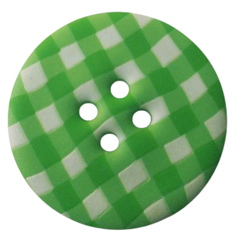

Family: Bufonidae
Order: Anura (frogs and toads)
Genus: Rhinella
Name: Cururu toad (or Schneider's toad)
Scientific name: Rhinella diptycha
Habitat
Open formations, in savannas, fields, pastures, riparian forests, edges of gallery forests, meadows, and swamps.
Toxicity
Like most buphonids, this species is able to secrete venom, with the aim of fending off predators such as snakes. It has an extremely resistant venom, with cardiotoxic characteristics due to its similarity to cardioglycosides. Can cause from nausea and vomiting to paralysis and death. Unlike many myths about the species, it is unable to purposefully squirt poison, requiring its glands to be pressed, with which it is harmless to humans, since it would be necessary that this was done and that the toxin was ingested or came into contact with the mucous membranes so that it could cause any harm.
Diet
Insects, arthropods and small vertebrates (mice and snakes).